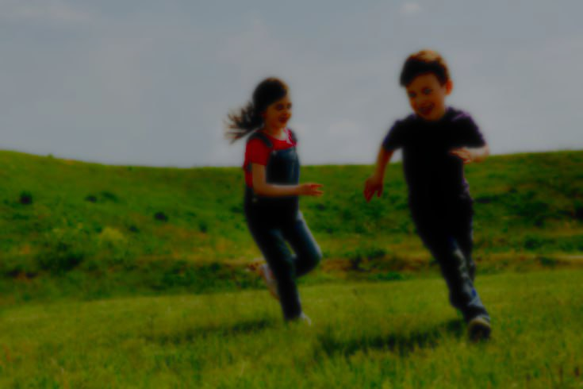
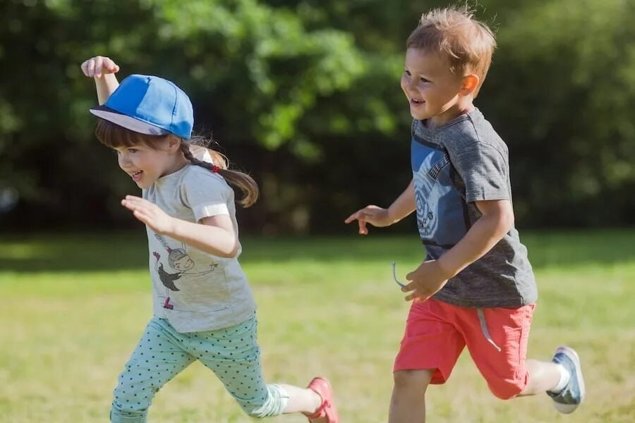

Cat rooms
Create your own cat room!

Seasons of the year
Experience all four seasons together!
9
10, 11, 12...
13
14, 15, 16...


Догонялки — это популярная подвижная игра, которая часто играется детьми на улице. Суть игры заключается в том, что один игрок "ловит" остальных, бегая за ними. Тот, кого поймали, становится "догоняющим". Игра не только развивает физическую активность, но и способствует развитию социальных навыков, таких как командная работа и взаимодействие. Догонялки могут варьироваться по правилам, включая различные модификации и элементы, такие как "заморозка" или "тише воды, ниже травы", что добавляет интерес и динамику в игру.
Create your own cat room!
Experience all four seasons together!
10, 11, 12...
14, 15, 16...
1, 2, 3, 4...